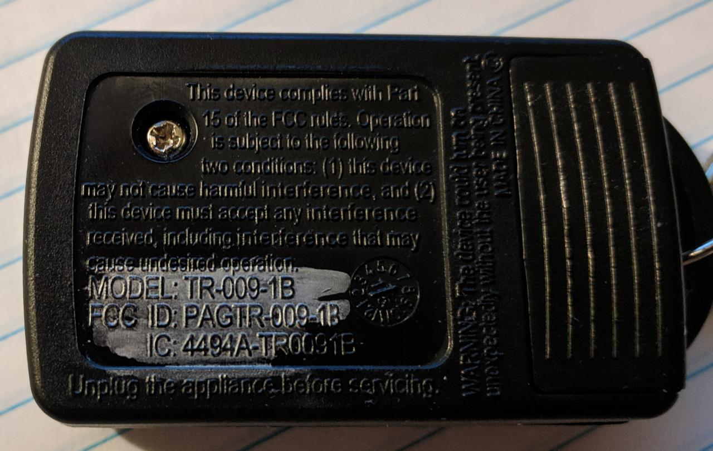
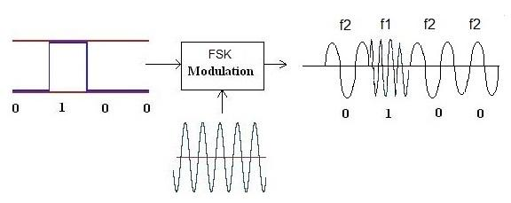

Reverse Engineering a $20 remote controlled outlet
Introduction
A few years ago, I bought a remote controlled outlet from Walmart. I don't recall the exact price, but it was less than $20. It was pretty much purchased for the explicit reason of trying to understand how they worked. The end goal, is that I wanted to know if
I could decode/intercept the signals
It was vulnerable to replay attacks
Tools Used
RTL SDR
Yardstick One
Inspectrum
GQRX
rfcat
This is going to be quite a long post, so I suggest getting a cup of coffee before continuing. At the end, I have included a youtube video showing the entire process.
Background/Motivation
Every day, we are bombarded with wireless signals, and I like to know what they are. My passion for radios started very early on. When I was about 5 years old, I had a set of walkie talkies that had a "base station" with a large antenna. I believe operated on the 27 MHz band. My grandmother's cordless phone was also on the 27 MHz band, or was close enough. The first time I understood the power of radio was when I managed to listen to conversations. I couldn't quite make out all the words, but there was enough for me to figure out that I was listening to a phone call. In retrospect, I think the receive end of my walkie talkie was wide enough to get some of the signal from the phone. I managed to find a picture on the internet of what I had.
So what does that have to do with remote controlled outlets? Well, it is simple. There are plenty of devices that operate on the ISM band that have no security controls. These radios are in everything from
Garage door openers
Home security systems
Car remotes
Weather stations
Restaurant pagers
Most of the functionality is undocumented. Some devices are more secure than others. For example, can additional functionality be gained by sending modified data packets, or is sensitive data leaked though these unsecured communications?
The wireless outlet
In order to understand how this system works, Let's look at the internals of the outlet and the remote.
The outlet end is secured with 4 screws. The circuit board is pretty boring; a relay rated for 10A/240VAC, a DIP IC with "AUT980202-B", and a separate board soldered on at a right angle. The smaller board has the antenna connected to it (the blue coiled wire) I was unable to locate a datasheet for these components, but they are likely analog rf chips. The only interesting thing is that the remote and the outlet both have the same chip.
Outlet and remote
The outlet board
The remote board
The datasheet wasn't really needed. The FCC ID printed on the remote is enough to find the testing documents.
fccid.io (not affiliated with the FCC, just a more user friendly version)
The FCC report reveals the device operates on 315 MHz.
With that information, it is time to move on to actually looking at the signals.
Capturing the waveform
The first step is determining the modulation and data stream looks like. For that, I used my RTLSDR and GQRX to visualize the signal.
In that waterfall display, I clicked the on and off buttons several times. There is a little bit of a drift, but that can be ignored.
Now the modulation must be determined
Brief primer on modulation types
Amplitude Shift Keying
Amplitude shift keying (ASK) is the simplest modulation. In this mode, the amplitude of the radio signal is modulated between 2 distinct amplitudes representing 0 and 1. Sometimes this alternates between 1 and 0.5, or directly between 0 and 1. The latter is referred to as On-Off Keying (OOK) This presents a major problem for low power radios: the further away from the transmitter, the signal decreases in amplitude. Far away, the 50% bit may be lower than the baseline RF noise. This is less of a concern for OOK. Personally, I have never encountered any ASK signals that are not OOK, but that doesn't mean they don't exist.
More detailed information can be found on https://en.wikipedia.org/wiki/Amplitude-shift_keying

Frequency Shift Keying
Frequency Shift Keying (FSK) is a bit different. ASK is similar to AM radio, FSK must be transmitted using FM. FSK is a bit like an additional layer on top of FM. FSK is identified by hearing 2^n distinct frequencies. The most common variations are 2FSK and 4FSK. As the name suggests, FSK shifts the frequency of the carrier wave between two distinct frequencies. FSK is often visually identifiable in a waterfall display because the frequency shift will be apparent.
More detailed information can be found on https://en.wikipedia.org/wiki/Frequency-shift_keying
Based on the waterfall from earlier, the remote is using amplitude shift keying.
Decoding the signal
There are multiple ways of decoding the signal. All require capturing the signal, either as raw I/Q samples, or as an audio file. For ASK, GQRX can be put in AM receive mode and the audio stream can be saved as a .wav file. The .wav file can then be manually analyzed using Audacity. This is quite time consuming, but may be worthwhile as a learning exercise. The challenge is recovering the symbol rate of the data stream.
I recorded the audio from two button presses (one on, one off).
This image shows the .wav file captured. Zooming in on the first burst, it is actually made up of several groups of pulses.
Further zooming in, it appears that each pulse group is identical.
There are two distinct amplitudes, low and high. The "on" time can be measured for each position, and then translated to 1's and 0's. This "on" time is used to calculate the symbol rate or baudrate.
Manually decoding is quite tedious, so instead Inspectrum will be used to do this.
First, record the raw I/Q samples using GQRX and open the file in Inspectrum.
Right click and add a "derived plot" of the amplitude.
On the amplitude plot, right click and add a derived threshold plot.
The min and max power sliders may need to be adjusted to get the intermediate plot to have the "on" amplitude above the dotted line.
Click the "enable cursors" checkbox and move the vertical lines so the match the shortest "on" pulse.
Some trial and error is required to get the timing to line up.
The length of the data that is transmitted is unknown.
This will typically be a multiple of 2.
The dotted lines should match the entire data pulse.
Some may hang over the end if the last transmission is a 1 followed by some 0's.
The width of the cursor may need to be adjusted slightly to align the dashed lines.
The final version should look like image below

The last piece of information needed is the symbol rate. Effectively, the symbol rate is how long the radio is on when transmitting a 1, or how long when sending a 0. This is calculated by Inspectrum, and is shown to the right in the above image.

The last step is to right click the threshold plot and choose "export".
This process will need to be repeated for each signal that needs decoding. At least one group from the "on" button push and the "off" button push is required. Comparing successive "on" presses will confirm that no rolling code is in operation.
The "on" data string is 0x8ee8e88888e88888.
The "off" data string is 0x8ee8e888888e8888.
Notice the 11th and 12th bits are transposed in the off command.
With all of that information, it is time to move on to replaying the signal.
RfCat and the Yardstick One
RfCat is the "swiss-army knife of ISM band radio". RfCat requires sudo to run unless some udev rules are modified.
The Yardstick One was produced by Michael Ossman, and is based on the same chip found in the IM-ME toy and the ToorCon 14 badge.
After launching rfcat from the command line, the interface is an ipython shell.
To send the data decoded from the remote, the following code is used.
d.setFreq(314970000) d.setMdmModulation(MOD_ASK_OOK) d.setMdmSyncMode(0) d.setMdmDRate(1600) # baud rate from inspectrum def on(): d.RFxmit(b"\x8E\xE8\xE8\x88\x88\xE8\x88\x88\x00\x00" * 5) def off(): d.RFxmit(b"\x8E\xE8\xE8\x88\x88\x8E\x88\x88\x00\x00" * 5)
If a standalone script is preferred instead of having to configure rfcat each time, the following code can be run.
# outletOn.py
from rflib import *
d = RfCat(idx=0)
d.setFreq(314970000)
d.setMdmModulation(MOD_ASK_OOK)
d.setMdmDRate(1600)
d.setMdmSyncMode(0)
def on():
d.RFxmit(b"\x8E\xE8\xE8\x88\x88\xE8\x88\x88\x00\x00" * 5)
def off():
d.RFxmit(b"\x8E\xE8\xE8\x88\x88\x8E\x88\x88\x00\x00" * 5)
on()
This will switch the outlet on when run from a terminal, ex; python outletOn.py.
The purpose of the two null bytes at the end 0x00 is to give some space between successive transmissions.
You may be wondering "why is the signal repeated multiple times?". This is a fair question, and the only answer I have is that it is done to ensure that the outlet is able to get a good decode when the button is pressed. There isn't much sophistication in these devices, and there is no sort of error correction, or checksum validation.
Further topics
I have tried to figure out how URH (universal radio hacker) could be used. Unfortunately, I had a lot of trouble getting consistent results with my setup. If I didn't already know what I was looking for, I never would have gotten any meaningful results from URH. I don't blame the software, I either don't have good data to feed it or have some sort of setting wrong.
Lastly, another piece of software rtl_433 is a nifty tool to decode a lot of common consumer devices. Often, there is an additional application layer on top of the data recovered from the wireless signal (ex: how the temperature is encoded in binary, other payload positions, etc).
References
There has been a lot of work done by a lot of awesome people to make this process approachable and easy.
Michael Ossman - Yardstick One
atlas0fd00m - rfcat https://github.com/atlas0fd00m/rfcat
The GNURadio project - https://github.com/gnuradio/gnuradio
Inspectrum - https://github.com/miek/inspectrum
The video
First, I'd like to say that this is my first video ever, so it may not be as polished as it could have been.
Last thoughts
If you made it this far, congratulations. I'm happy to answer questions on twitter https://twitter.com/haicenhacks